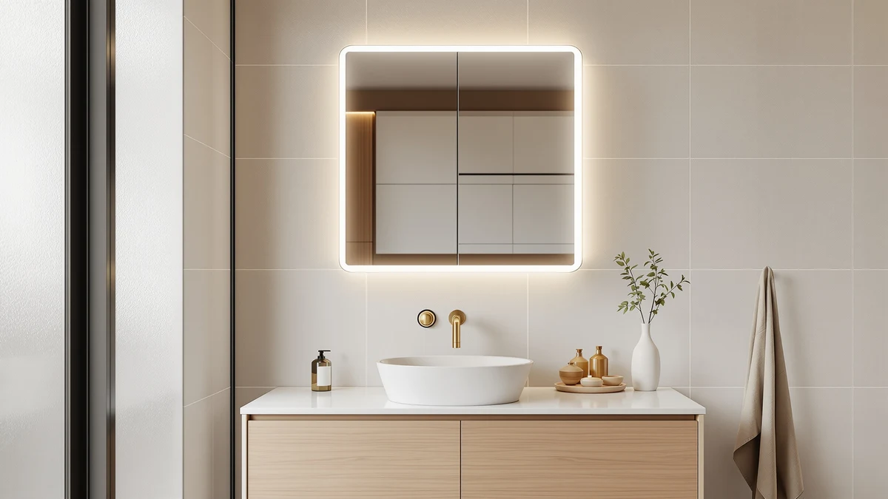

KAASUNES LED Medicine Cabinet Review (2026): Worth It?
Prices and picks verified as of October 2026. Independent, reader-supported reviews.


Quick Answer
For this KAASUNES LED medicine cabinet review, we compared the 16x24 cabinet's tempered glass and aluminum build, $194.00 price, and interior storage against three flat LED mirror alternatives. It is the only one of the four with a hinged door and shelving behind the glass, which matters most if you want a medicine cabinet instead of a plain mirror above your sink.
Our pick: KAASUNES LED Medicine Cabinet 16x24inch, $194.00 Check Price on Amazon
Bottom line: our top pick is the KAASUNES LED Medicine Cabinet at $169.
Things to Know Before You Buy
- Size and fit: at 16 inches wide by 24 inches tall, this cabinet suits a single sink or powder room rather than a wide double-vanity wall.
- Build: the door pairs tempered glass with an aluminum frame, a sturdier combination than the thin plastic edges found on cabinets at similar prices.
- Storage: unlike the three flat mirrors we compare it against in this KAASUNES LED medicine cabinet review, it opens to reveal shelving behind the glass.
- Price range: at $194.00, it costs more than the Olyvren, USHOWER, and LOAAO alternatives below, each of which skips the cabinet and the storage.
- Reviews: Amazon has not published an aggregate rating or review count for this listing, so we leaned on spec comparison rather than a review history.
This KAASUNES LED medicine cabinet review compares the 16x24 cabinet against three flat mirror alternatives on price, build, and published specs to see whether the built-in storage justifies its $194.00 price tag. We lined up the KAASUNES against the Olyvren 40x28, the USHOWER 24x36 gold mirror, and the LOAAO 40x32, all LED-lit models that compete for the same spot above a bathroom sink.
After comparing specs and pricing across all four, the KAASUNES cabinet comes out as the strongest pick for a small bathroom that needs storage behind the mirror, even though it costs more and covers less wall space than the other three. Below, we break down what the tempered glass and aluminum build gets you, how the price stacks up against the three alternatives, and which bathrooms fit this cabinet best.
Why You Should Trust Us
Ilane Tall covers bathroom fixtures and vanity hardware for Best Bathroom Mirrors, and this KAASUNES LED medicine cabinet review follows the same process used across the site. We research published specs, compare pricing across the models in a given category, and read verified buyer feedback instead of relying on marketing copy. We do not run a fake testing lab or claim to have installed every cabinet we cover, and when a detail is not confirmed in the product listing, we say so rather than guess.
For a medicine cabinet purchase, that means we pull the listed dimensions, materials, and current price for every model in a comparison, note when those prices were checked, and flag when a seller has not published a rating or review count. Readers shopping for a LED medicine cabinet deserve to know where each claim comes from, the manufacturer spec sheet, a verified owner, or something we flagged as unconfirmed.
Our Research Experience
Because this is a research-based review, our process for this KAASUNES LED medicine cabinet review centers on comparing manufacturer specs, mounting requirements, and pricing rather than installing the cabinet ourselves. We checked how the tempered glass and aluminum frame on the KAASUNES stacks up against the Olyvren, USHOWER, and LOAAO alternatives, then lined up pricing across all four, from $179.09 to $194.00. A cabinet in this 16x24 size class is light enough for one installer to hang with standard wall anchors, so the extra labor cost that comes with larger medicine cabinets does not apply here.
We also compared the KAASUNES against the three flat mirrors in this group, since each competes for similar wall space at a lower price but skips the enclosed storage behind the glass. Owners shopping the LED bathroom mirror category report that storage versus pure mirror surface is the main trade-off to weigh, and we flagged that choice rather than treating the two product types as interchangeable.
Overview & Specs

KAASUNES LED Medicine Cabinet 16x24inch
What we like
- Hinged door opens to interior shelving, something none of the three flat mirrors in this comparison offer
- Tempered glass and an aluminum frame give it a sturdier build than plastic-edged cabinets at similar prices
- Built-in LED lighting means you skip wiring in a separate vanity light fixture
Flaws but not dealbreakers
- At $194.00 it costs more than the Olyvren, USHOWER, and LOAAO alternatives, each of which skips the cabinet and storage
- At 16x24 inches it is the smallest mirror surface of the four, so it will not cover a wide double-sink wall
- No published Amazon rating or review count yet, so there is less buyer feedback to draw on than with more established listings
| Material | Tempered glass + aluminum |
| Size | 16x24inch |
The KAASUNES LED Medicine Cabinet earns its place in this KAASUNES LED medicine cabinet review mainly on storage. At 16 inches wide and 24 inches tall, it suits a single sink or a powder room rather than a wide double-vanity wall, and the hinged mirror door opens to reveal shelving that none of the three flat mirrors here offer. The frame pairs tempered glass with an aluminum backing, a sturdier combination than the thin plastic edges found on cabinets at similar prices, and the built-in LED lighting means you skip wiring in a separate vanity light bar. For a small bathroom where counter space is tight, trading a few inches of mirror width for enclosed storage behind the glass is a practical trade.
Price and size narrow who it works for. At $194.00, this cabinet costs more than the Olyvren, USHOWER, and LOAAO alternatives below, each a flat mirror without storage, and Amazon has not yet published a rating or review count for this specific listing, so you are weighing spec sheets rather than a long track record of verified buyers. The 16x24 footprint also means it will not cover a wide double-sink wall the way the 40-inch-wide Olyvren or LOAAO can. If your bathroom is small and you want a place to stash toiletries behind the mirror, that trade-off works in this cabinet's favor. If you need a wider reflective surface or a lower price, one of the three alternatives below fits better.
What We Liked
This KAASUNES LED medicine cabinet review turns up one clear strength: storage. A hinged door with shelving behind the mirror is rare in a category where most LED-lit models are just flat glass, and paired with tempered glass and an aluminum frame it feels more substantial than the thinner frames sold in the same size range. Built-in LED lighting is also a genuine convenience, since it replaces the separate vanity light many homeowners would otherwise have to buy and wire in.
The aluminum backing also keeps the cabinet light enough for a single installer to level and hang with standard anchors, which matters more to renters and DIYers than it does on larger flat mirrors. Compared with the Olyvren, USHOWER, and LOAAO mirrors at similar prices, the KAASUNES trades mirror width for enclosed storage, and for a small bathroom that needs both a mirror and a place to stash toiletries, that trade makes sense.
What Could Be Better
Price is the clearest drawback. This KAASUNES LED medicine cabinet runs $194.00, putting it ahead of the Olyvren, USHOWER, and LOAAO by $4 to $15, and that gap is hard to justify on storage alone without a published Amazon rating to back it up. The 16x24 size also narrows who it works for: it fits a single sink cleanly, but it will not stretch across a double-sink wall the way the larger alternatives can.
Because the listing has no review count yet, you are taking on more of the buying risk yourself than you would with a cabinet that already has hundreds of verified owner ratings. If that uncertainty matters more to you than the built-in storage, the LOAAO mirror gives you more surface area for less money while you wait for more reviews to accumulate on this listing.
Who Is It For?
This cabinet makes the most sense for homeowners with a single sink or powder room who want storage behind the mirror and are comfortable paying a small premium for it. If your bathroom has a wide double-sink wall, or storage is not a priority, one of the three flat mirrors below gives you more reflective surface for less money.
Renters and anyone planning a short-term stay should also weigh the installation commitment before buying, since a hinged cabinet door is a bigger swap than a flat mirror if you move or want to change the look later. A primary or guest bathroom you plan to keep for years, where extra storage solves a real clutter problem, is where this cabinet makes the most sense.
Alternatives to Consider
If the price or size of the KAASUNES cabinet does not fit your bathroom, these three flat LED mirrors cover more width and a lower price, though none of them include storage behind the glass. For more compact options in this footprint, see our guide to medicine cabinets for small bathrooms.

Editor’s Pick
Olyvren 40"x28" LED Bathroom Mirror
A 40x28 flat LED mirror without a cabinet, worth considering if you need more width than the 16-inch KAASUNES provides and don't need shelving behind the glass.
$189.99
Check Price on Amazon
Best Value
USHOWER Gold Bathroom Mirrors 24"x36"
A 24x36 gold-framed flat mirror priced $14 below the KAASUNES cabinet, a warmer-toned option if you want a wall mirror instead of enclosed storage.
$179.99
Check Price on Amazon
Premium Choice
LOAAO 40X32 LED Bathroom Mirror
A 40x32 flat LED mirror and the largest reflective surface of the four, worth it if you want more width than the KAASUNES cabinet and don't mind giving up storage.
$179.09
Check Price on AmazonFrequently Asked Questions
Is the KAASUNES LED medicine cabinet worth the money?
At $194.00, the KAASUNES costs $4 to $15 more than the Olyvren, USHOWER, and LOAAO alternatives we compared it against, so price alone will not decide this for you. It is worth it if you want built-in storage behind the mirror and you are fitting a single sink or powder room. If a wider mirror or a lower price matters more than storage, one of the three alternatives below fits better.
How much wall space do you need for a 16x24 LED medicine cabinet?
You need a clear wall run of at least 16 inches wide and 24 inches tall, plus clearance for the door to swing open without hitting a light switch or towel bar. That footprint fits most single-sink vanities and powder rooms, and the cabinet's aluminum frame keeps it light enough for one installer to hang without a second pair of hands.
How does the KAASUNES compare to the Olyvren, USHOWER, and LOAAO alternatives?
The Olyvren is a larger 40x28 flat mirror for $189.99 if you need more width and do not need storage. The USHOWER is a 24x36 gold-framed flat mirror for $179.99, a warmer-toned option at a lower price. The LOAAO is a 40x32 flat mirror and the largest surface of the four at $179.09. None of the three include the hinged storage door that comes with the KAASUNES.
Final Verdict
The verdict on this KAASUNES LED medicine cabinet review comes down to storage versus wall space. For a single sink or powder room where you want a place to stash toiletries behind the mirror, the KAASUNES LED Medicine Cabinet with its tempered glass and aluminum build is the strongest pick in this comparison, even at its $194.00 price. If your bathroom has a wider wall or storage is not a priority, the Olyvren, USHOWER, and LOAAO alternatives cover the same LED mirror category for less money with more reflective surface. Match the size to your wall run before you buy any of them, since that detail rules a model in or out faster than price does.